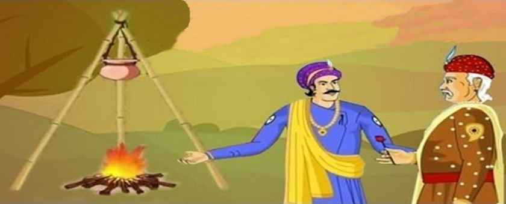

There was cold time Lord Akbar and Birbal with his courtiers were roaming in their garden talking about how much cold is there:-
Akbar:Nowadays there is too cold.
One Of Courtier Fakir:Ji Jahapanah! Nobody wants to get out of his house because of it.
Akbar:Yes!But common people have to work without seeing that there is cold or not .
Fakir: Ji Huzoor! But Huzoor when there is immense cold they prefer to stay at there home.
While Talking to his Courtier akbar gone to his lake to touch it.
Akbar: Ya Allah! The water is too cold it seems to be ice .Yes! fakir you were right nobody can go out of their house to work.
Birbal: But Huzoor! poor people don't see such weather reason to go out for work .
Akbar:It is not neccassary Birbal that you will always go against of my views.
Birbal:No Huzoor !No i was'nt intended to do that, but just keeping my opinions that poor people can work for just negligible amount.
Akbar:Done Birbal! Now You get one person till night that can stand in this icy water lake for overnight i will give him 10 golden coins.
BirbalSure huzoor! i will bring you that person.
At Dusk Akbar Call all the courtiers and ask Birbal.
Akbar: Have you brought him ?
Birbal:Ji Huzoor! He is out of this court if you allow i'll call him?
Akbar: Ofcourse call him.
Birbal calls the Person named Gangaram.He enters the court.
Akbar:Do you know why you are called for?
Gangaram:Ji Huzoor! i have to stand in the cold icy lake overnight.
Akbar:Yes ! And that to without any help and support.Everybody listen that you have to take care of our guest and as we are seeing him for the last time and yes two soldiers will be their to lookafter him.
Next day..
Akbar:Is your man alive (joking) Birbal?
(Everybody laughs except Birbal)
Birbal:Ji Huzoor! he is out should i call him ?
Akbar:Yes! what are youn waiting for!
Gangaram Enters..
Akbar:How are you alive have you taken any help or support?
Gangaram:No Huzoor!But..
Akbar:But what.
Gangaram:There was the lamp glowing far away near your mahal huzoor i was feeling the warmth coming from it.
Akbar:That's It ,you are a cheater Gangaram i will not pay you the reward you don't deserves it.
Gangaram:But Huzoor! But..
Akbar:Go away from here you cheater be thankful to me that i am not taking your life for such a cheat you did to me.
Gangaram leaves disappointing..
Birbal
Akbar:Birbal you have to admit the loose this time.
Birbal:I am sorry for standing against you.
Akbar:No problem Birbal! Sometime we might do mistake it's ok .Ok Birbal move ahead you were helping to decide the gift fdor iraq shah.
Birbal:Huzoor ! But i have to solve family issue right now.
AkbarOk Birbal no problem you can go.
Birbal leaves..
Birbal do not come for five to six days..
Akbar:Mansingh ! What happened to Birbal why his not coming to darbar from so many days.
Mansingh: Huzoor He will come after eating food.
Next day..
Akbar:Mansingh ! What happened now to Birbal his feeding not over yet.
Mansingh:Huzoor !let me send a soldier to his mahal.
Akbar: No wait i'll go myself to check him.
Akbar went ..
Akbar:What happened Birbal why you are not coming to court from so many days everybody was saying you will eat and come.
Birbal:Ji Huzoor ! see my stew is not cooking i am trying to cook it.
Stew was cooking in a earthen pot distant from the fire .

Akbar:Birbal have you gone mad just put that stew pot over fire then it will get warmth and it will cook.
Birbal: Huzoor ! I thought just Like Gangaram got the warmth to stand overnight the icy lake under far distant lamp my pot also getting warmth somewhere from the fire to get cook.
Akbar:I got your point Birbal just call Gangaram ,Birbal i'll pay his reward.
STORY ENDS
Home page